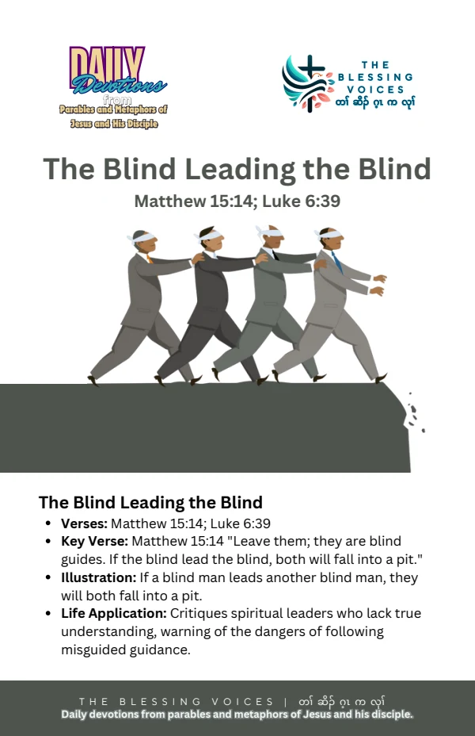

Introduction
Read this English paraphrase of the biblical teaching alongside the original companion booklet. Context notes, devotional applications, reflection questions, and prayer are study aids rather than additional biblical text.
The Bible Story
Jesus used the image of one blind person guiding another and asked whether both would fall into a pit. In Luke, this is followed by teaching about a disciple and a teacher. This paraphrase reflects Matthew 15:14 and Luke 6:39–40.
Historical and Biblical Context
CONTEXT & DEVOTIONAL INTERPRETATIONMatthew places the image in a dispute about teaching and defilement; Luke includes it among teachings to disciples. The illustration concerns unreliable guidance and should not be used to demean people with visual disabilities.
Spiritual Lessons
CONTEXT & DEVOTIONAL INTERPRETATIONThe saying invites discernment about whom we follow and humility about the guidance we offer. A teacher’s influence makes careful learning important.
Practical Life Applications
CONTEXT & DEVOTIONAL INTERPRETATIONCheck advice against Scripture in context. Be honest about the limits of your understanding and seek wise help before guiding someone else.
Reflection Questions
- What danger does the illustration describe?
- How does a teacher’s influence affect a learner?
- Where do you need greater humility or discernment in giving advice?
Closing Prayer
Lord God, help us understand your Word and receive it with humility. Guide our choices and teach us to live with faith, wisdom, and love. Amen.
Continue your reflection.
Your free companion study booklet.
Download Free Booklet ↓PDF · Free download